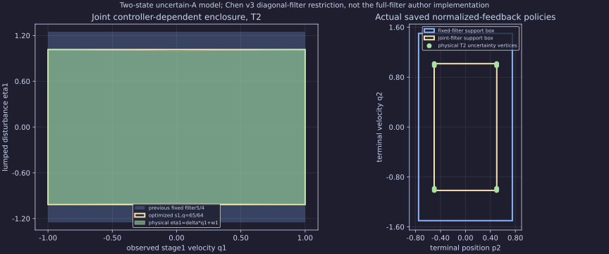

This independently authored profile implements the jointly affine scaled-response identity and controller-dependent uncertainty-overapproximation constraints from Chen v3(24),(26),(36), restricted to block-diagonal positive filters and one uncertain A entry. No author code, full-filter/uncertain-B capability, recursive-feasibility or general causal minimax claim. Physical position disturbance is zero; the virtual position-filter floor1/1024 makes the two-state filter invertible and conservatively enlarges its response set.
The native LP minimizes a virtual worst-terminal-absolute upper bound, squared for the original toy cost. Exact rational reconstruction checks source, causality, every filter/support row and the physical cost lower bound. For this particular loose-constraint toy, the returned joint upper bound attains the independent physical lower bound (65/64)^(2(T−1)); that equality does not generalize to SLS bounds. Prescribed-gain and symmetry-optimal zero fixed-plan baselines use the same physical controls/uncertainty. The previous fixed5/4 filter is a separate conservative comparison.

Complete equations, proof and information order · Exact saved figure inputs · Source, counts and all timing ranges · Independent checks · Complete raw records/source/CPU/RSS.
| Profile | Verified/attempts | Exact virtual qT² upper bound | LP vars/rows/nnz | Median native port-run ns |
|---|---|---|---|---|
| T2-sigmaoptimized-diagonal-fixed-plan | 5/5 | 16641/4096 | 48/79/156 | 1959415 |
| T2-sigmaoptimized-diagonal-fixed-gain | 5/5 | 15625/4096 | 48/81/160 | 1269377 |
| T2-sigmaoptimized-diagonal-joint | 5/5 | 4225/4096 | 48/79/156 | 1287326 |
| T2-sigmafixed5over4-fixed-filter | 5/5 | 9/4 | 48/79/156 | 1231383 |
| T4-sigmaoptimized-diagonal-fixed-plan | 5/5 | 1152206881281/68719476736 | 150/235/524 | 4381882 |
| T4-sigmaoptimized-diagonal-fixed-gain | 5/5 | 954773265625/68719476736 | 150/247/548 | 2433083 |
| T4-sigmaoptimized-diagonal-joint | 5/5 | 75418890625/68719476736 | 150/235/524 | 2200999 |
| T4-sigmafixed5over4-fixed-filter | 5/5 | 4 | 150/235/524 | 2326993 |
| T8-sigmaoptimized-diagonal-fixed-plan | 5/5 | 1381596721645732462556840961/19342813113834066795298816 | 522/787/1908 | 9883191 |
| T8-sigmaoptimized-diagonal-fixed-gain | 5/5 | 895359272061953632683765625/19342813113834066795298816 | 522/843/2020 | 11964899 |
| T8-sigmaoptimized-diagonal-joint | 5/5 | 24031838291621636962890625/19342813113834066795298816 | 522/787/1908 | 12137409 |
| T8-sigmafixed5over4-fixed-filter | 5/5 | 9 | 522/787/1908 | 11635524 |
Performance verdict: inconclusive. One warmup plus five alternating repeats are descriptive; native setup and ConvexPort run include documented parse/registry/adapter checks and are not isolated LP time or MPC-update latency. A separate Python diagnostic does not establish the native limiter. Failed/resource/reconstruction outcomes stay in denominators. No core API, required dependency, native rebuild or library release. Existing HiGHS/Matplotlib qualifications remain. Independent review and root-owned checked publication remain required; this unit does not close603.